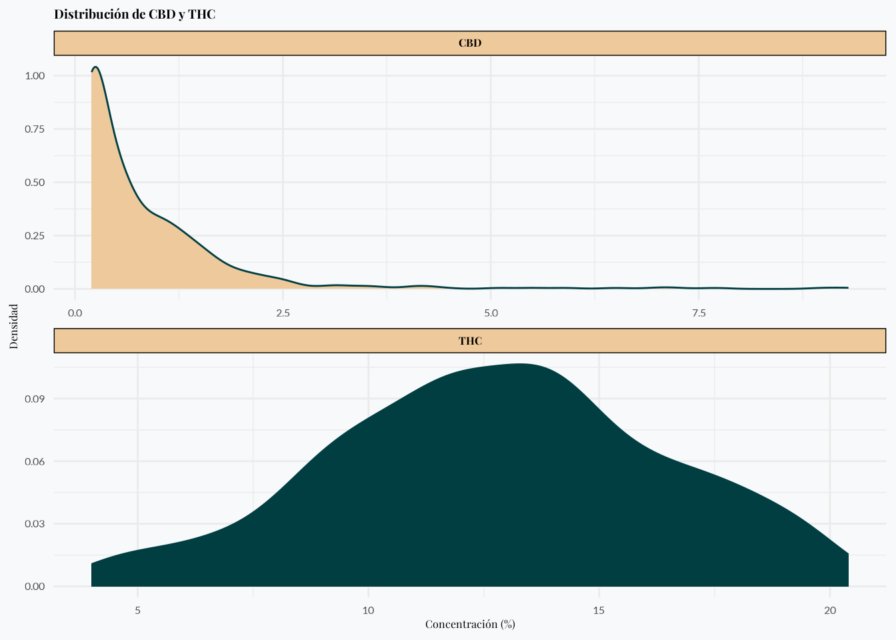

THC and CBD Analysis
Data collection from Flower Power
Introduction
We explore data from 533 cannabis samples collected between September 2020 and October 2024. (add more details about the data, who collected them, why people would want to know the THC and CBD levels of a sample, who were the producers, etc.) We examine what their distributions look like, and how the two compounds relate to each other.
Time of data collection
Our data spans a period from late 2020 to late 2024.
THC by time of data collection
When we look at the THC levels over time, we observed that samples collected in the most recent year tend to have higher THC concentrations.
This trend can be interpreted as an increase in THC levels over time, but it’s important to consider potential sampling biases.1
Sample Locations
Our samples were collected from 15 different locations across Colombia, representing diverse geographical regions from coastal areas to inland territories. The interactive map below allows you to explore the sampling locations - you can zoom, pan, and click on markers to see location details.
The geographical distribution spans from the Caribbean coast (Santa Marta, Cartagena) to the interior regions (Bogotá, Medellín) and southern territories (Pitalito), representing samples from various growing conditions and cultivation practices across Colombia.
CBD by time of data collection
CBD levels show a similar pattern with small decreases over time.
THC and CBD distribution
The average THC content was found to be 12.8%, with the middle half of samples ranging from 10.3% to 15.3%. In contrast, CBD levels were much lower, averaging just 0.9%, with most samples falling between 0.2% and 1.1%.
| Characteristic | N = 5331 |
|---|---|
| THC | 12.8% (10.3% - 15.3%) min 4.0 max 20.4 |
| CBD | 0.9% (0.2% - 1.1%) min 0.2 max 9.3 |
| 1 Mean% (Q1% - Q3%) min Min max Max | |
The following plot shows the distribution of THC and CBD levels.

CBD Distribution
The CBD data is highly right-skewed. This means that most samples have very low levels of CBD, with a sharp peak near zero and a long tail stretching toward higher values. In plain terms, nearly all of the samples have little CBD, and only a few show higher amounts.
THC Distribution
In contrast, THC levels form a more bell-shaped (or normally distributed) curve. Most of the samples cluster around the middle range (around 12.8%), with fewer samples having extremely low or extremely high levels. This indicates that THC concentrations are more consistent among the samples compared to CBD.
THC curve for comparison
The following plot visualizes the distribution of THC concentrations in cannabis samples. The curve shows how frequently different THC percentages occur in our dataset. We’ve marked key points in the curve:
- The dashed vertical lines indicate the 25th percentile (Q1), mean, and 75th percentile (Q3)
- Q1 (25th percentile): 25% of samples have THC levels below this value
- Mean: The average THC concentration across all samples
- Q3 (75th percentile): 75% of samples have THC levels below this value
This visualization helps you understand where a specific THC percentage falls within the overall distribution of cannabis potency in our dataset.

#| '!! shinylive warning !!': |
#| shinylive does not work in self-contained HTML documents.
#| Please set `embed-resources: false` in your metadata.
#| standalone: true
#| components: [viewer]
#| layout: vertical
#| viewerHeight: 700
library(shiny)
library(ggplot2)
# Calculate statistics from the data
MEAN_THC <- 12.8
SD_THC <- 3.2
Q1_THC <- 10.3
Q3_THC <- 15.3
ui <- fluidPage(
titlePanel("Compare Your THC Level"),
sidebarLayout(
sidebarPanel(
numericInput("thc_value",
"Enter your sample's THC %:",
value = 12.8,
min = 4,
max = 30,
step = 0.1),
textOutput("percentile_text")
),
mainPanel(
plotOutput("thc_plot", height = "400px")
)
)
)
server <- function(input, output) {
# Generate distribution data
x <- seq(4, 25, length.out = 1000)
density_data <- data.frame(
x = x,
y = dnorm(x, mean = MEAN_THC, sd = SD_THC)
)
output$thc_plot <- renderPlot({
ggplot() +
# Plot density curve
geom_line(data = density_data, aes(x = x, y = y),
color = "#003E42ff", size = 1) +
geom_area(data = density_data, aes(x = x, y = y),
fill = "#003E42ff", alpha = 0.3) +
# Add reference lines
geom_vline(xintercept = Q1_THC,
linetype = "dashed", color = "#003E42ff", alpha = 0.7) +
geom_vline(xintercept = Q3_THC,
linetype = "dashed", color = "#003E42ff", alpha = 0.7) +
geom_vline(xintercept = MEAN_THC,
linetype = "dashed", color = "#003E42ff") +
# Add user's THC value
geom_vline(xintercept = input$thc_value,
color = "#EEC99Bff", size = 1.5) +
# Add labels
annotate("text",
x = c(Q1_THC, Q3_THC),
y = c(0, 0),
label = c("Q1: 25%", "Q3: 75%"),
vjust = -0.5,
color = "#003E42ff") +
# Customize theme
theme_minimal() +
labs(title = "THC Distribution with Your Sample",
x = "THC (%)",
y = "Density") +
theme(
text = element_text(family = "sans-serif"),
plot.title = element_text(face = "bold"),
panel.background = element_rect(fill = "#f8f9fa", color = NA),
plot.background = element_rect(fill = "#f8f9fa", color = NA)
)
})
output$percentile_text <- renderText({
value <- input$thc_value
if (value < Q1_THC) {
sprintf("Your sample's THC level (%.1f%%) is below the 25th percentile (Q1: %.1f%%)",
value, Q1_THC)
} else if (value > Q3_THC) {
sprintf("Your sample's THC level (%.1f%%) is above the 75th percentile (Q3: %.1f%%)",
value, Q3_THC)
} else {
sprintf("Your sample's THC level (%.1f%%) is between the 25th and 75th percentiles (Q1: %.1f%%, Q3: %.1f%%)",
value, Q1_THC, Q3_THC)
}
})
}
shinyApp(ui, server)This interactive visualization:
- Shows the THC distribution curve
- Displays reference lines for Q1 (25th percentile), median, and Q3 (75th percentile)
- Allows users to input their sample’s THC percentage
- Shows their value as an amber-colored vertical line on the plot
- Provides text feedback about where their sample falls in the distribution
- Uses the same color scheme as the rest of your document (#003E42ff and #EEC99Bff)
- Has a clean, minimal design that matches your document’s style
The plot will update automatically when users change the THC value, and it works well for GitHub Pages since it uses Shinylive. Users can: - Input any THC value between 4% and 30% - See exactly where their sample falls in the distribution - Get immediate text feedback about their sample’s percentile - Compare their value to the population statistics
Would you like me to: 1. Adjust the plot’s appearance or size? 2. Add more statistical information? 3. Modify the input range or step size? 4. Add additional interactive features?
THC/CBD ratio
Our analysis shows that THC and CBD have an inverse relationship - when one goes up, the other tends to go down. This pattern is most clear in samples with less than 10% THC. In samples with higher THC content (above 10%), this inverse relationship still exists but becomes weaker.
When we look at the correlation between THC and CBD using the samples with more than 10% THC, we see that the negative correlation is -0.19 which indicates a negative relationship between the two compounds but it’s not very strong.2
Summary of Findings
Our analysis of 533 cannabis samples collected between 2020 and 2024 reveals several key insights:
THC Content
- Average THC: 12.8%, with the middle half of samples ranging from 10.3% to 15.3%
- THC levels follow a relatively normal distribution, indicating consistency across samples
- There is a noticeable upward trend in THC content in more recent samples
CBD Content
- Average CBD: 0.9%, with most samples containing between 0.2% and 1.1%
- CBD distribution is highly right-skewed, with most samples having very low levels
- CBD levels show a slight downward trend over the collection period
Relationship Between THC and CBD
- There is an inverse relationship between THC and CBD levels
- This negative correlation is strongest when THC is below 10%
- As THC levels increase beyond 10%, the relationship becomes less pronounced
These findings highlight the predominance of high-THC, low-CBD cannabis in the samples analyzed, with a trend toward increasing THC potency over time. This information can be valuable for consumers, producers, and regulators in understanding the current cannabis market landscape.
Footnotes
If our data sources remained consistent throughout the collection period, we could attribute this to actual changes in cannabis cultivation practices. However, it’s possible that our more recent samples disproportionately represent producers with advanced cultivation capabilities and greater resources, who can achieve higher THC concentrations.↩︎
In correlation analysis, values between 0 and ±0.3 are considered weak, ±0.3 to ±0.7 moderate, and ±0.7 to ±1.0 strong. Our correlation falls in the weak to moderate range, suggesting the relationship isn’t strong.↩︎